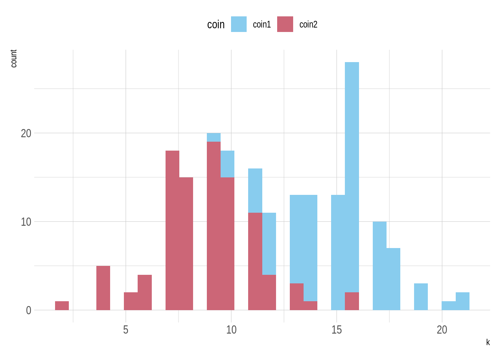
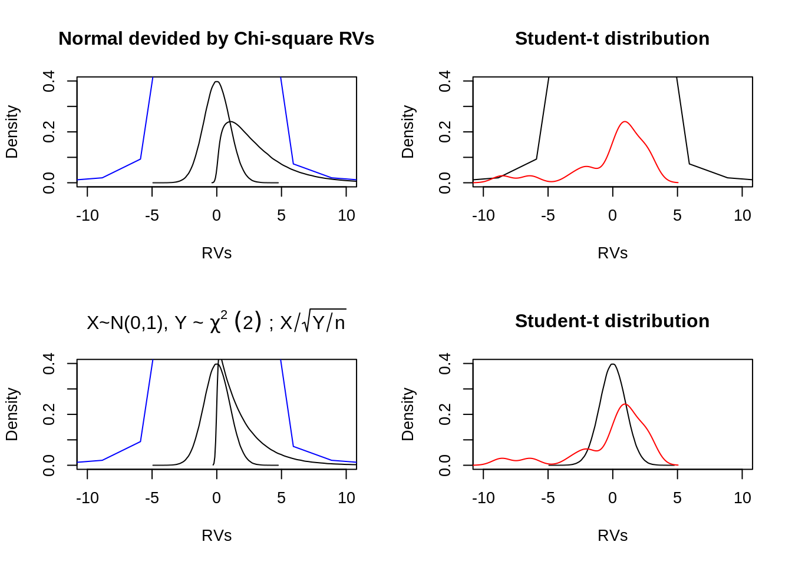
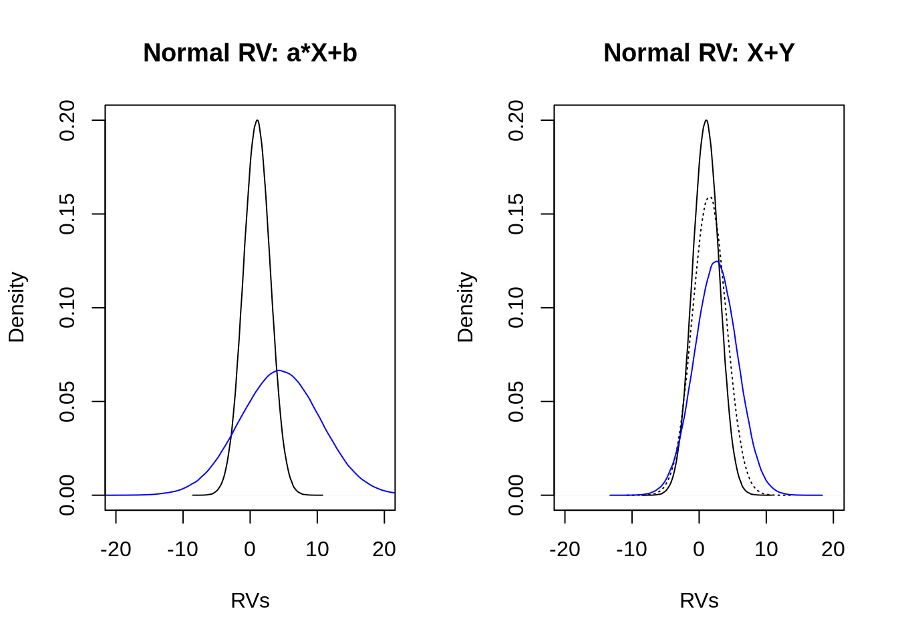
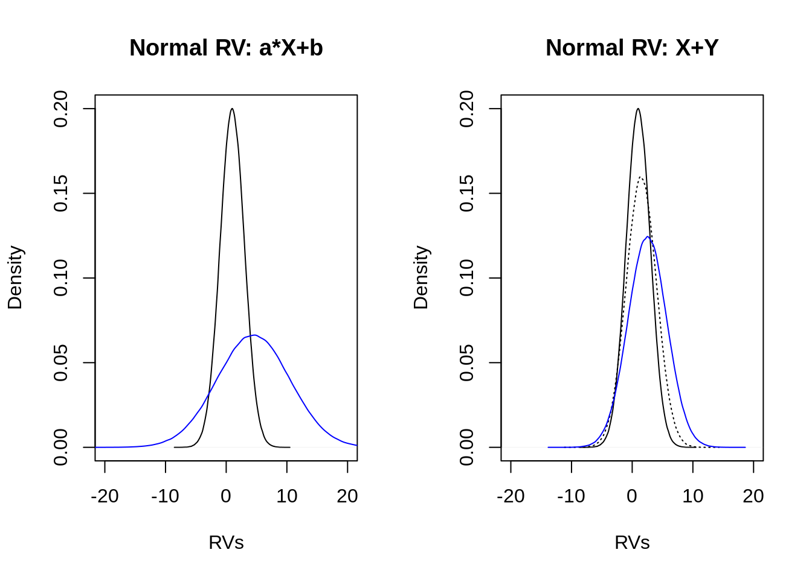
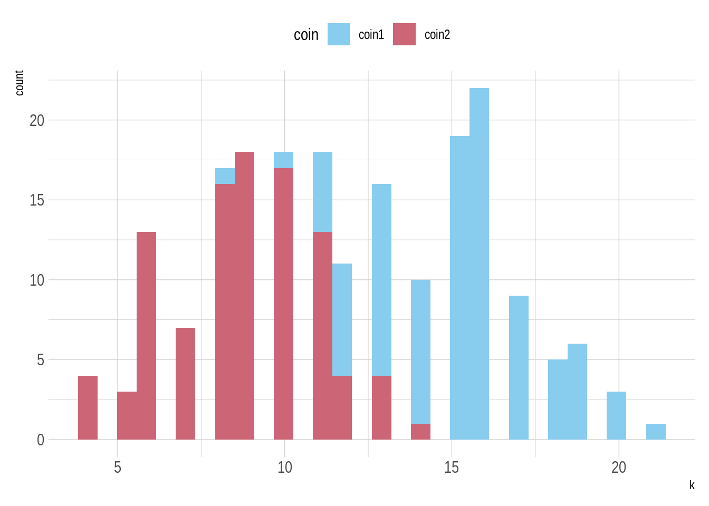

3.2 What is a (simple) linear regression?
We are interested in explaining or predicting the murder rates in a city. Suppose we have nothing to explain it with, i.e., we only have a vector of murder rates. Let’s plot the murder rate for every city (just numbered consecutively):

3.2.1 Prediction without any further information
Suppose we knew all observed murder rates. If we then wanted to predict the murder rate of a random city , but had no further information about that city, our best guess would be the mean of the observed murder rates, because this is what minimizes (on average) the distance to the observed murder rates.
The plot below visualizes the prediction we make by this naive approach. The black dots show the data points, the red line shows the prediction we make (the mean murder rate), the small hollow dots show the specific predictions for each observed value \(x_i\) and the gray lines show the distance between our prediction and the actual data observation.

The mean distance could be captured in terms of the total sum of squares like this, where \(y\) is the \(n\)-placed vector observed murder rates and \(\bar{y}\) is its mean:
\[ \text{TSS} = \sum_{i=1}^n (y_i - \bar{y})^2 \]
In the case at hand, that is:
## [1] 1855.2023.2.2 Prediction with knowledge of unemployment rate
We might not be very content with this prediction error. Suppose we could use some piece of information about the random city whose murder rate we are trying to predict. E.g., we might happen to know the value of the variable unemployment. How could that help us make a better prediction?
There does seem to be some useful information in the unemployment rate, which may lead to better predictions of the murder rate. We see this in a scatter plot:

Let us assume, for the sake of current illustration, that we expect a very particular functional relationship between the variables murder_rate and unemployment. For some reason or other, we hypothesize that even with 0% unemployment, the murder rate would be positive, namely at 4 murders per million inhabitants. We further hypothesize that with each increase of 1% in the unemployment percentage, the murder rate per million increases by 2. The functional relationship between dependent variable \(y\) (= murder rate) and predictor variable \(x\) (= unemployment) would then be expressible as a linear function (the hat on variable \(y\) indicates that these are not data observations but predictions):
\[ \hat{y}_i = 2x_i + 4 \]
Here is a graphical representation of this functional relationship. Again, the black dots show the data points, the red line the linear function \(f(x) = 2x +4\), the small hollow dots show the specific predictions for each observed value \(x_i\) and the gray lines show the distance between our prediction and the actual data observation. (Notice that there are data points for which the unemployment rate is the same, but we observed different murder rates.)

We can again quantify our prediction error in terms of a sum of squares like we did before. For the case of a prediction vector \(\hat{y}\), the quantity in question is called residual sum of squares.
\[ \text{RSS} = \sum_{i=1}^n (y_i - \hat{y})^2 \]
Here is how we can calculate RSS in R:
y <- murder_data %>% pull(murder_rate)
x <- murder_data %>% pull(unemployment)
predicted_y <- 2 * x + 4
n <- length(y)
rss_guesswork <- sum((y - predicted_y)^2)
rss_guesswork## [1] 1327.74Compared to the previous prediction, which was based on the mean \(\bar{y}\) only, this linear function reduces the prediction error (measured here geometrically in terms of a sum of squares).
3.2.3 Simple linear regression: general problem formulation
Suppose we have \(k\) predictor variables \(x_1, \dots , x_k\) and dependent variable \(y\). We consider the simple linear relation (where the hat on top of vector \(y\) symbolizes that this is a vector of predictions):
\[ \hat{y}_i = \beta_0 + \beta_1 x_{1i} + \dots + \beta_k x_{ki}\]
The parameters \(\beta_0, \beta_1, \dots, \beta_k\) of this equation are called regression coefficients. In particular, \(\beta_0\) is called the regression intercept and \(\beta_1, \dots, \beta_k\) are regression slope coefficients. Based on the predictions of a parameter vector \(\langle \hat{\beta}_0, \hat{\beta}_1, \dots, \hat{\beta}_k\rangle\), we consider the residual sum of squares as a measure of prediction error:
\[\text{RSS}_{\langle {\beta}_0, {\beta}_1, \dots, {\beta}_k\rangle} = \sum_{i = 1}^k (y_i - \hat{y}_i)^2 \]
We would like to find the best parameter values (denoted traditionally by a hat on the parameter’s variable: \(\hat{\beta}_i\)) in the sense of minimizing the residual sum of squares:
\[ \langle \hat{\beta}_0, \hat{\beta}_1, \dots , \hat{\beta}_k\rangle = \arg \min_{\langle \beta_0, \beta_1, \dots, \beta_k\rangle} \text{RSS}_{\langle {\beta}_0, {\beta}_1, \dots, {\beta}_k\rangle} \]
For instance, the example started above, where we regressed murder_rate against unemployment has two regression coefficients: an intercept term and a slope for unemployment. The optimal solution for these (see next section) delivers the regression line in the graph below:

The total sum of squares for the best fitting parameters is:
## [1] 467.6023The next section will explain how we find best-fitting parameter values in the sense above.